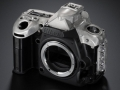
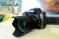
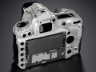
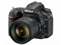
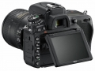
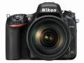

器材库 > 35mm画幅可换镜头数码相机 > D750

规格总览
产品类型
35mm画幅可换镜头数码相机
发布日期
2014-09-12
厂家推荐价格
13,000.00 （人民币）
影像规格
影像传感器
CMOS
影像传感器尺寸
35.9mmx24.0mm
总像素
约2,493万万
有效像素
约2,432万万
影像处理器
EXPEED 4
最大解像度
6016x4016
静态图像格式
JPEG, NEF(RAW), NEF(RAW)+JPEG
画幅比
3:2
短片尺寸
1920x1080;60p（逐行）
短片格式
MOV
防抖系统
镜头防抖
除尘系统
清洁影像传感器、图像除尘参考数据（需要捕影工匠软件）
镜头和对焦
镜头卡口
Nikon AF
兼容镜头
FX镜头
对焦点
尼康高级Multi-CAM 3500 II自动对焦感应器模组，具备TTL相位侦测、微调、51个对焦点（包括15个十字型感应器；11个感应器支持f/8）
自动对焦点选择
自动, 手动
AF辅助灯
有
手动对焦
支持
曝光控制
测光系统
使用约91000像素RGB感应器的TTL曝光测光
测光模式
中央重点测光, 点测光, 中央点测光, 矩阵测光
测光范围
-3至+19EVEV
拍摄模式
自动模式（自动、自动（闪光灯关闭））；场景模式；特殊效果模式；带有柔性程序的程序自动（P）；快门优先自动（S）；光圈优先自动（A）；手动（M）；U1（用户设定1）；U2（用户设定2）
快门类型
纵走式焦平面快门
快门速度
1/4000至30秒，以1/3、1/2EV为步长进行微调）、B门、遥控B门、X200
闪光同步速度
X=1/200秒；在1/250秒或以下速度时，与快门保持同步（速度为1/200至1/250秒之间时闪光范围缩小）秒
曝光补偿
±5EV以1/3EV级调整
自动曝光锁
有
ISO感光度
50, 51200
连拍
6.5幅/秒（CH）或3幅/秒 (Qc)
闪光灯
内置闪光灯
弹出式
闪光指数
12
闪光补偿
-3 至 +1EV
取景器/显示屏
取景器
眼平五棱取景器
取景范围
100%
取景放大倍率
0.7倍
屈光度调节范围
–3至+1m-1
对焦屏
B型光亮磨砂对焦屏Mark III，带有AF区域框（可显示取景网格）
反光镜
即时返回型
反光镜锁定
有
景深预视
有
LCD类型
低温多晶硅TFT LCD
LCD尺寸
3.2英寸
LCD像素
123万
LCD特性
翻转屏
Live View
有
文件输入/输出
存储卡
SD/SDHC, SDXC
数据接口
USB, 高速USB
视频/音频接口
AV 输出, MIC 输入, C型HDMI接口
无线功能
Wi-Fi
电源
电池
EN-EL15锂离子可充电电池
机身规格
材质
后背与顶部为铝镁合金
颜色
黑色
尺寸
约140.5×113×78mmmm
重量
约840g（带电池和存储卡，但不包括机身盖）；约750g（仅照相机机身）g
其它
工作温度
0℃至40℃℃
工作湿度
85%或以下（不结露）%
drlyly752018-03-01 14:504.38 分
操作性 4.50功能性 4.50美观性 4.50趣味性 4.00耐用性 4.00性价比 4.50解像力 4.50色彩还原 4.50
sovietliga2017-10-17 10:464.81 分
操作性 5.00功能性 5.00美观性 4.50趣味性 5.00耐用性 4.50性价比 5.00解像力 5.00色彩还原 4.50
刹那轮回2016-10-20 01:204.56 分
操作性 4.50功能性 4.50美观性 4.50趣味性 4.50耐用性 4.50性价比 5.00解像力 4.50色彩还原 4.50
edzhang2016-09-14 14:054.63 分
操作性 4.50功能性 5.00美观性 5.00趣味性 5.00耐用性 4.00性价比 4.50解像力 4.50色彩还原 4.50
liuxbc2015-12-15 09:315 分
操作性 5.00功能性 5.00美观性 5.00趣味性 5.00耐用性 5.00性价比 5.00解像力 5.00色彩还原 5.00
rainatauze2015-08-29 23:374.94 分
操作性 5.00功能性 5.00美观性 5.00趣味性 4.50耐用性 5.00性价比 5.00解像力 5.00色彩还原 5.00
驿站路人2015-08-14 17:354.75 分
操作性 5.00功能性 4.50美观性 4.50趣味性 4.50耐用性 5.00性价比 5.00解像力 5.00色彩还原 4.50
wwmxp2015-06-23 23:564.88 分
操作性 5.00功能性 5.00美观性 5.00趣味性 5.00耐用性 4.50性价比 5.00解像力 5.00色彩还原 4.50
vleepmx2015-06-21 21:305 分
操作性 5.00功能性 5.00美观性 5.00趣味性 5.00耐用性 5.00性价比 5.00解像力 5.00色彩还原 5.00
acerhch2014-11-28 15:294.5 分
操作性 4.50功能性 4.00美观性 5.00趣味性 4.50耐用性 5.00性价比 4.50解像力 4.50色彩还原 4.00
papayatongjie2014-10-15 18:534.56 分
操作性 4.00功能性 5.00美观性 4.00趣味性 4.50耐用性 5.00性价比 5.00解像力 5.00色彩还原 4.00
xw1212122014-09-25 15:154.38 分
操作性 4.50功能性 4.50美观性 4.50趣味性 4.00耐用性 4.00性价比 4.50解像力 4.50色彩还原 4.50

wingszero2014-09-22 04:34
Laodaohgw2014-09-17 22:28
我只会按快门2014-09-15 22:574.5 分
操作性 4.50功能性 4.50美观性 4.50趣味性 4.50耐用性 4.50性价比 4.50解像力 4.50色彩还原 4.50
cybertron2014-09-13 15:134.5 分
操作性 4.50功能性 4.50美观性 4.50趣味性 4.50耐用性 4.50性价比 4.50解像力 4.50色彩还原 4.50
兮南兮蓝2014-09-12 20:42
产品图 / 样片




评测 / 相关文章
- 详细内容 （存档）
- 均衡之美 尼康D750详细评测 （存档）
- ［试用］体验2432万像素的威力 尼康D750画质评测 （存档）
- ［资讯］尼康D750技术交流会现场Q&A实录 （存档）
- ［资讯］小心漏洞 尼康D750 Wi-Fi可泄露照片 （存档）
- ［试用］尼康D750现场试用集锦 （存档）
- ［资讯］尼康D750体验会QA访谈摘要 （存档）
- ［资讯］尼康D750的十三项重点功能 （存档）
- ［资讯］中庸之道 点评尼康D750 （存档）
- ［资讯］尼康发布数码单镜反光相机D750 （存档）
相关文章
- ［试用］均衡之美 尼康D750详细评测 （存档）
- ［试用］体验2432万像素的威力 尼康D750画质评测 （存档）
- ［资讯］尼康D750技术交流会现场Q&A实录 （存档）
- ［资讯］小心漏洞 尼康D750 Wi-Fi可泄露照片 （存档）
- ［试用］尼康D750现场试用集锦 （存档）
- ［资讯］尼康D750体验会QA访谈摘要 （存档）
- ［资讯］尼康D750的十三项重点功能 （存档）
- ［资讯］中庸之道 点评尼康D750 （存档）
- ［资讯］尼康发布数码单镜反光相机D750 （存档）
- ［资讯］尼康D750 （存档）
- ［试用］用D750记录春天的气息 （原站已下线）
- ［行情］尼康D750最新低价 （原站已下线）
- ［资讯］尼康发布多款机身升级固件 （原站已下线）
- ［行情］尼康D750限时特价 （原站已下线）
- ［资讯］尼康公布追加D750免费检修通知 （原站已下线）
- ［行情］尼康D750重回万元以下 （原站已下线）
- ［行情］尼康实惠之选 D750最新低价 （原站已下线）
- ［资讯］谁是长曝王 各家机型高ISO长曝控躁PK （存档）